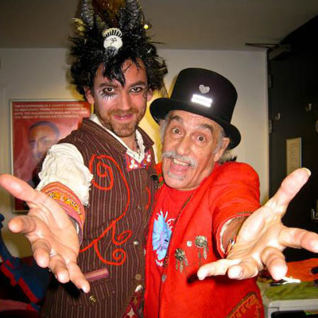

Are you Shpongled?
Simon Posford and Raja Ram are Shpongle. The sounds are a mix of mainly eastern ethnic samples and western contemporary psychedelic synth music.
Simon Posford and Raja Ram are Shpongle. The sounds are a mix of mainly eastern ethnic samples and western contemporary psychedelic synth music.